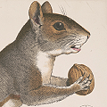
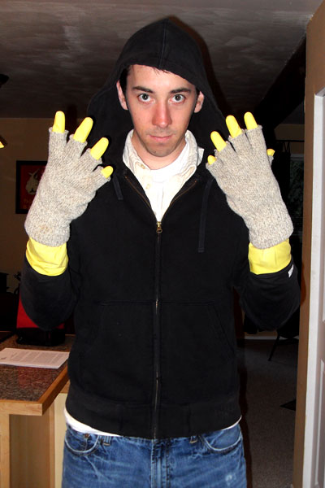

Swirly Squirrely

Published
by George Hess
These events took place between 7:00 and 7:30 AM, July 15th 2009, at the private residence of George and Kelley Hess in Bellingham, WA. Stories of what happened that morning have been told by many. This is the true account.
We began our Wednesday much like any other, running late. I could tell that I wasn't going to make the bus. And since I was already going to miss it, I poured myself another glass of orange juice.
My wife screamed.
“Must be a spider in the bathroom”, I thought to myself. I kept pouring.
My wife screamed again, a bit higher this time. “Uh–oh, the toilet might be overflowing.” I put the OJ down.
Again my wife screamed higher. “Oh crap! There's a serial killer in there!”
I prepared myself for the worst and charged towards the bathroom just as she burst out and slammed the door. Relieved not to find any blood stains, and yet slightly annoyed, I thought about lecturing her on abusing the serial–killer–octave–scream. Then she began.
“THERE IS A…” my inner dialog finished the sentence for her. Its version had something to do with a big spider. She informed me otherwise, “…SQUIRREL IN OUR TOLIET!”
“WHAT?”
“YES!”
“SQUIRREL?”
“YES!”
“IN TOLIET?”
“YES! I flushed and a SQUIRREL CAME OUT!!!”
We had to think quickly and got the idea to open the bathroom window (from the outside) so as to encourage him to scurry back into the great outdoors. When I opened the front door I was greeted by another one of our forestry friends – a buck. He was standing on the doormat with his head slightly lowered and tilted toward the house. He was eavesdropping! What, were we on the set of Rocky and Bullwinkle? I half expected him to pipe up and say,
“Uh… you guys haven't seen a squirrel around here have you?”
My patience for nature was quickly reaching its limits and I yelled at the buck to getouttahere. He stalked away and I popped the screen off of the bathroom window. But the little guy was stuck in the bowl because he couldn't get around the lip of the toilet seat, (men, this is probably the manliest reason you'll ever be given for putting the toilet seat down – it's good for trapping small game). I knew I had to go in and rescue him.
There was just one problem. What kind of squirrel winds up in your toilet anyway? The crazy rabies kind. I kept picturing the squirrel, flying out of the toilet and with a banshee like shriek, latching onto my face. But time was of the essence and in a mere two minutes my wife had me suited up in our most rabid–proof clothing: denim, a hoodie, and two layers of gloves (wool on the outside, rubber on the inside). With my hood synched tightly I entered into the lion's den.
At this point, the squirrel was exhausted and laying half in the water and half along the “shore”. I tried to gingerly pick him up but that prompted him to attempt one last escape. This time his route took him underwater and back down the drain.
“Oh no you don't!” I said as I grabbed him by the tail. After a minor scuffle I found myself outside and standing over a waterlogged squirrel. He wasn't moving. Now I'm not sure if it was my Disney saturated childhood or just plain old compassion for all creatures smaller than myself, but something compelled me to revitalize him. I took my thumbs and began CPR. When a few squirrel–sized gulps of water came out of his mouth I looked up and saw my wife cheering from the window. When I looked back down however, he still wasn't moving.
“Maybe he needs mouth to mouth?” I thought to myself. Self, not being quite as sympathetic as I, quickly shot that one down. “He's dead you idiot. Burry the poor beast!”
The funeral procession consisted of a short walk down the side of the house and dumping his plastic bag of a coffin into the garbage can. It hardly seemed adequate given this morning's events. I came back inside and discarded my gloves. As I raised a hard earned glass of orange juice to my lips, I knew one thing for sure; this squirrel would not soon be forgotten.
